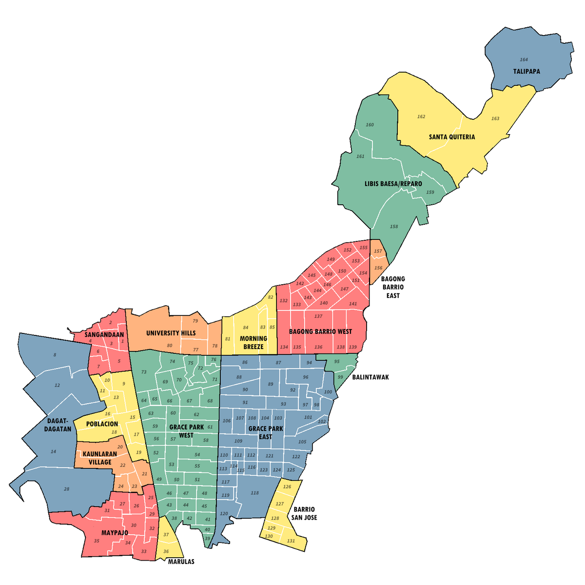
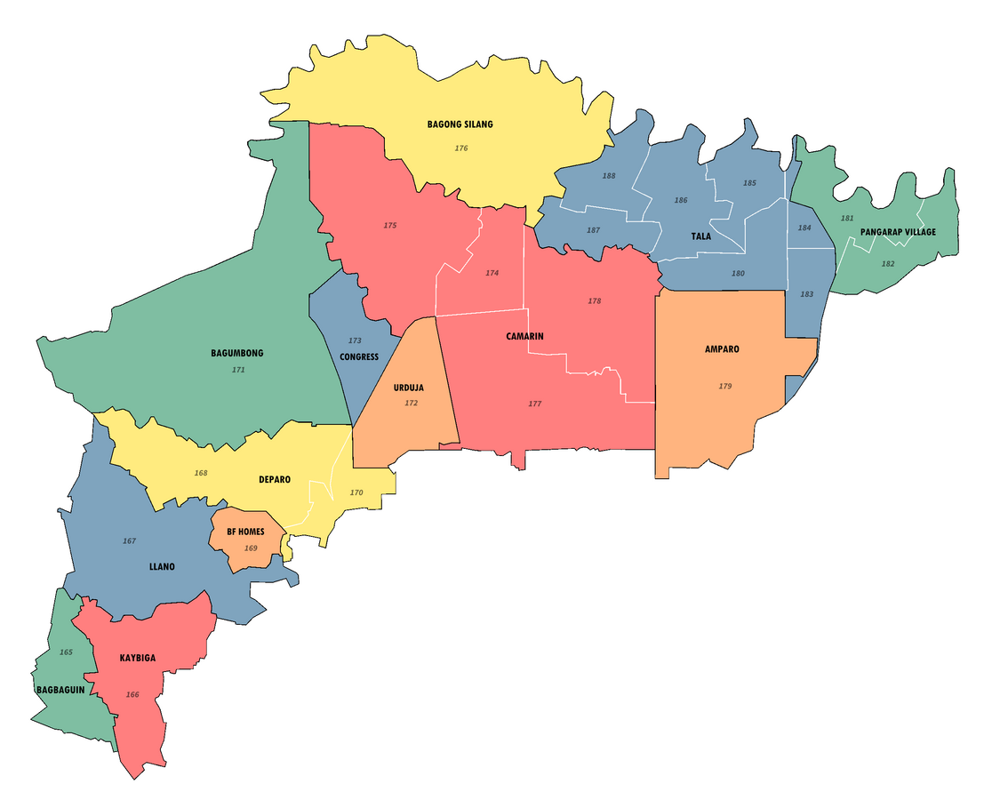

Barangays of Caloocan
Caloocan City is one of the largest cities in Metro Manila, and it is divided into numerous barangays that serve as the basic political units of the community. The city is split into two non-contiguous areas: South Caloocan and North Caloocan. South Caloocan is highly urbanized and home to many businesses, commercial districts, and schools, while North Caloocan is mostly residential and suburban, with several new housing developments and subdivisions.
In total, Caloocan has 188 barangays, each with its own local officials who ensure governance and services for the people. Barangays such as Bagong Barrio, Grace Park, and Sangandaan are well known for their active communities and historical importance. These barangays reflect the diversity of Caloocan’s population and its continuous growth as a vital part of Metro Manila.
Map of South Caloocan Barangays

Map of North Caloocan Barangays
Reason why there were lots of barangays in Caloocan
Caloocan has a large number of barangays because the city was already heavily populated when the barangay system was initiated, leading to many smaller, more numerous barangays to accommodate the population density, especially in its southern districts. Efforts were made to merge barangays, but proposed plans were rejected, resulting in the continuation of the existing smaller, numerous barangays.